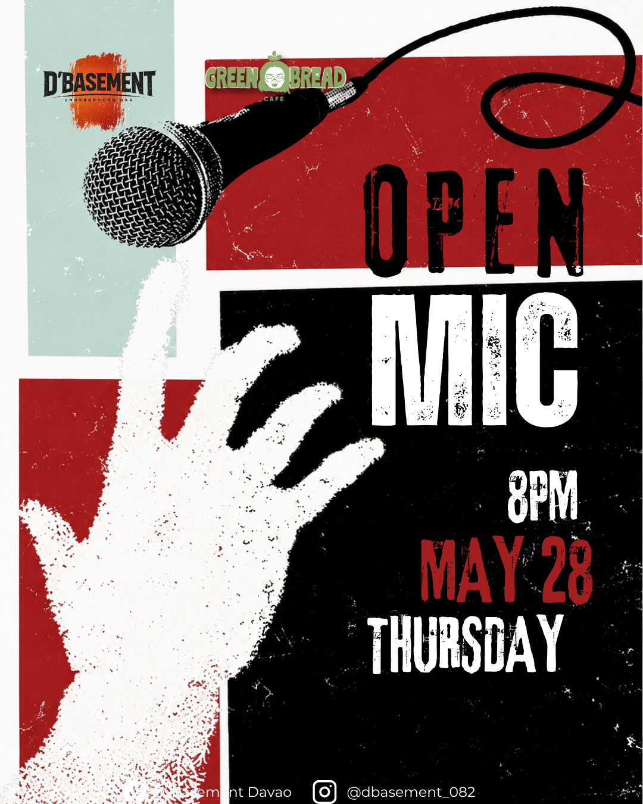
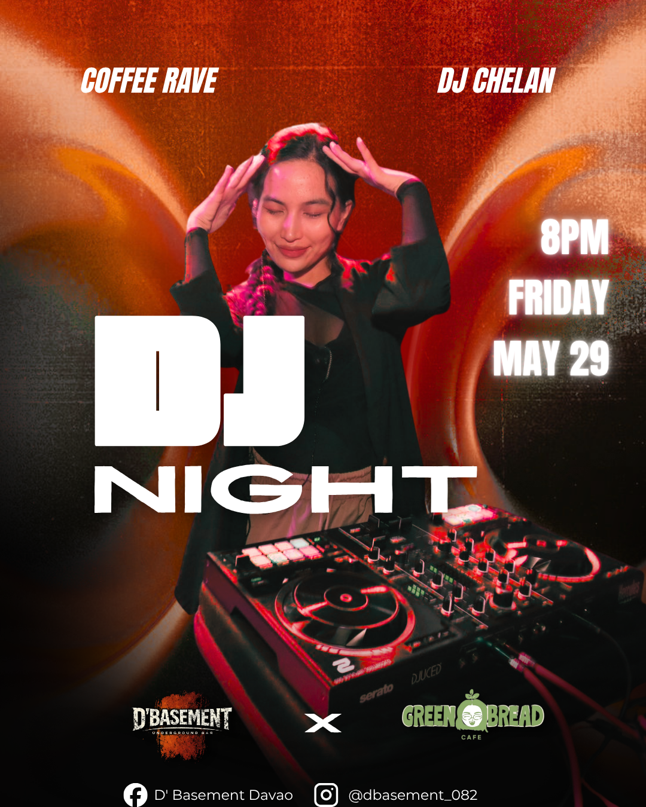
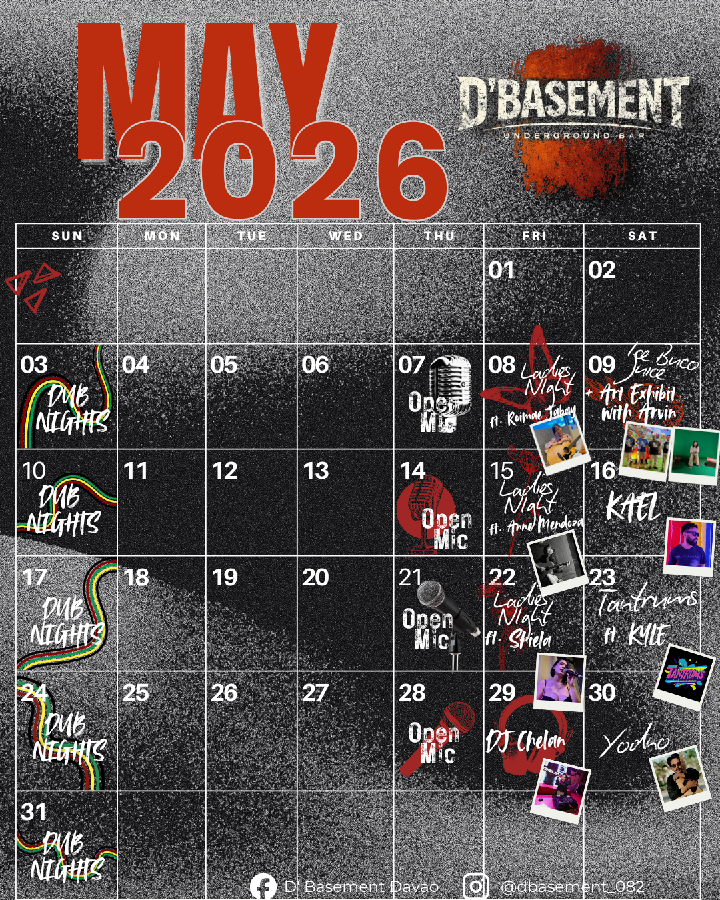
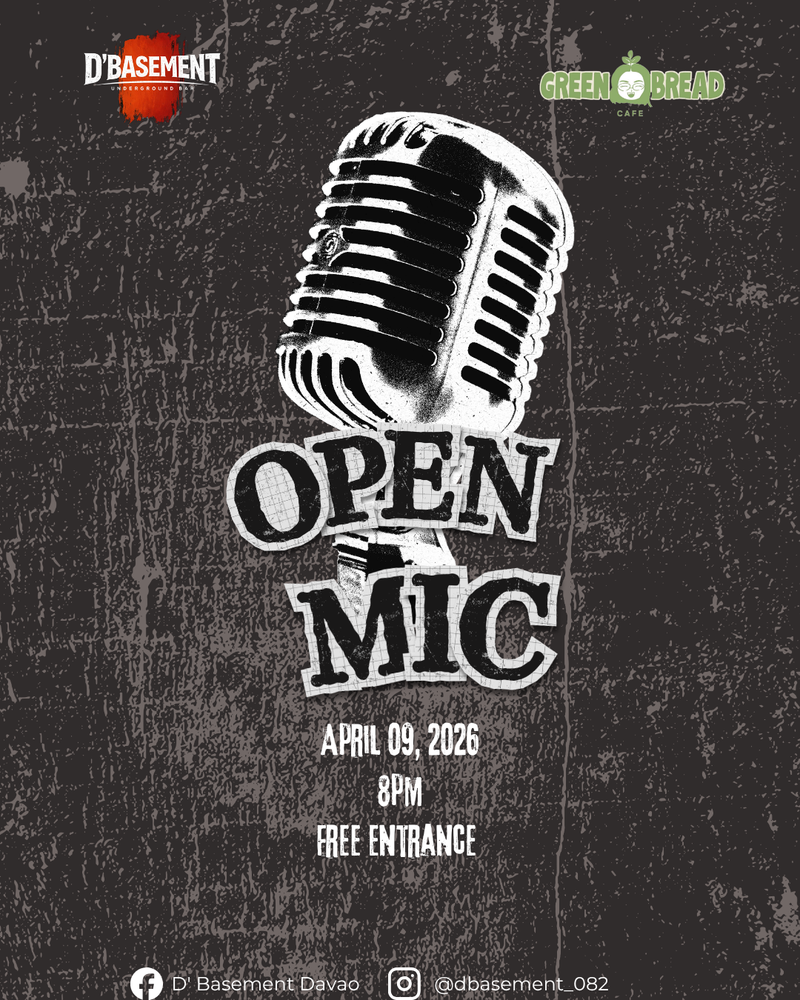
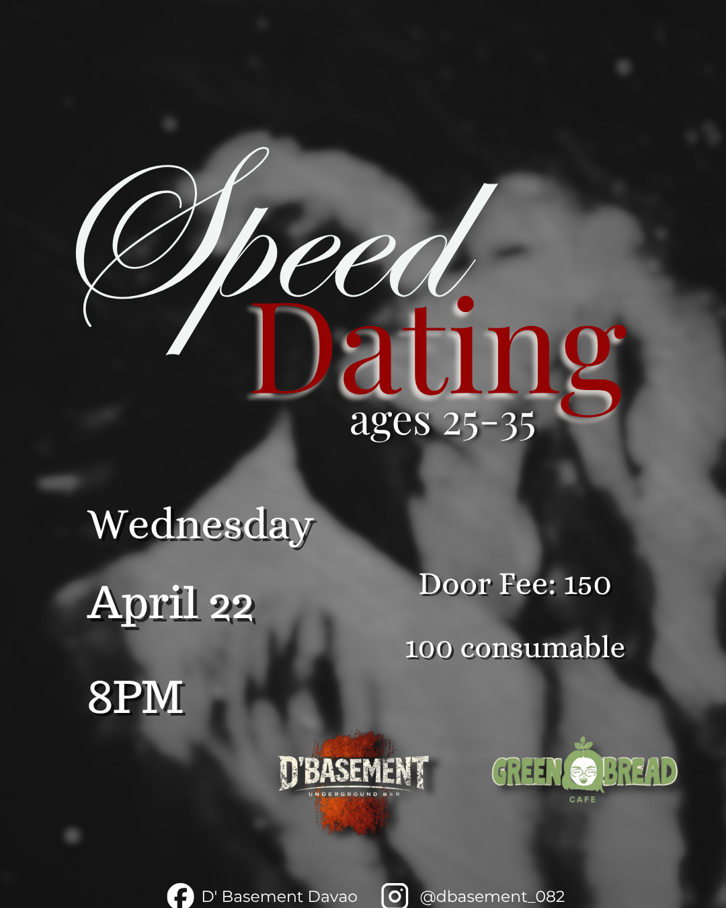
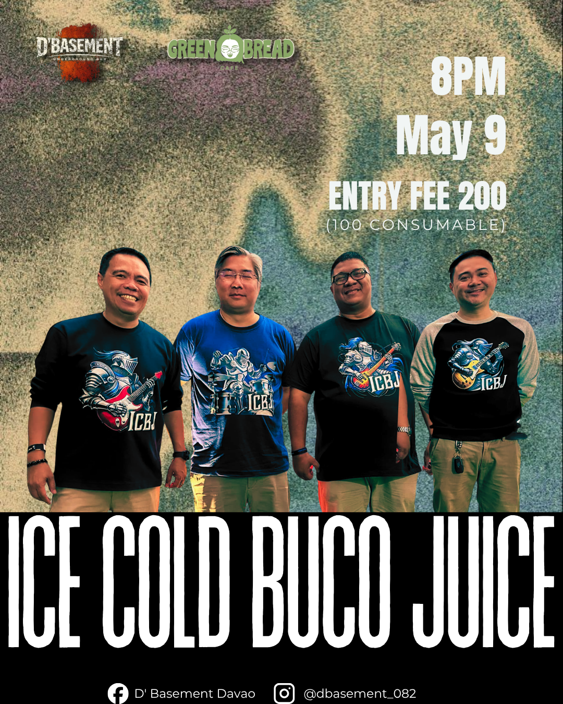
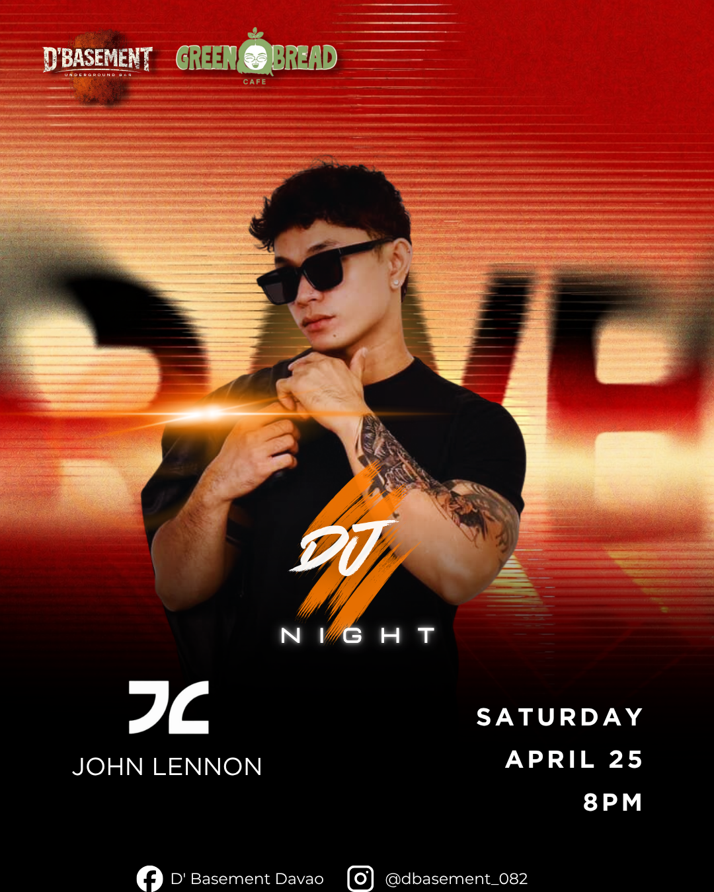
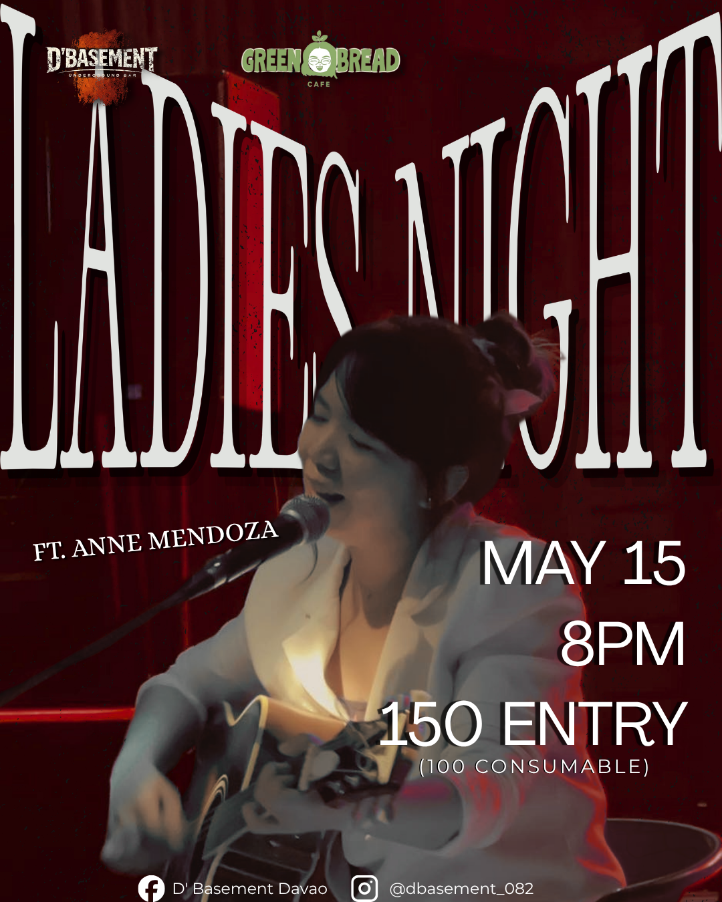
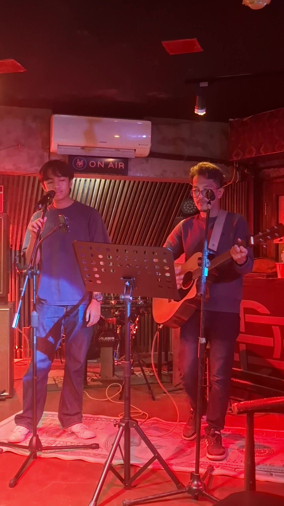

LOCAL MUSIC SCENE / DAVAO CITY / POSTERS + REELS + CULTURE
D’BASEMENT
VISUAL IDENTITY IN MOTION / 3–5 POSTS PER WEEK / ABOUT 1 YEAR
More collage. More texture. More movement. Same underground pulse.



01 / OVERVIEW
A VENUE THAT
CHANGES NIGHTLY.
D’Basement is a local music venue and bar in Davao City where artists, performers, and themed nights each needed their own spotlight. I handled posting, captions, and visual content — designing pubmats that kept the page active, recognizable, and alive.

EVENT DESIGN / SOCIAL MEDIA / CONTENT DIRECTION / REELS
02 / DESIGN APPROACH
FLEXIBLE,
BUT COHESIVE.
Instead of locking the brand into one visual formula, I treated the feed like a living poster wall. That meant letting each event feel distinct while repeating cues like contrast, grit, dramatic type, and loud focal imagery so everything still felt unmistakably D’Basement.
03 / POSTER WALL
A FEED BUILT
LIKE A GIG BOARD.




04 / MOTION
STATIC POSTS,
LIVE AFTERTASTE.

Beyond static pubmats, I edited event recaps and highlight clips that translated the same gritty energy into motion — helping the feed feel active even after the event ended.
VIDEO EDITING / LIVE-EVENT HIGHLIGHTS
05 / MY ROLE
DESIGNING
THE SCENE.
For around a year, I handled roughly 3–5 social content pieces per week: pubmats, captions, posting, reels, artist promotion, bartender content, and live-event highlights.
SOCIAL MEDIA DESIGN / EVENT PROMOTION / MOTION CONTENT — 2025–2026